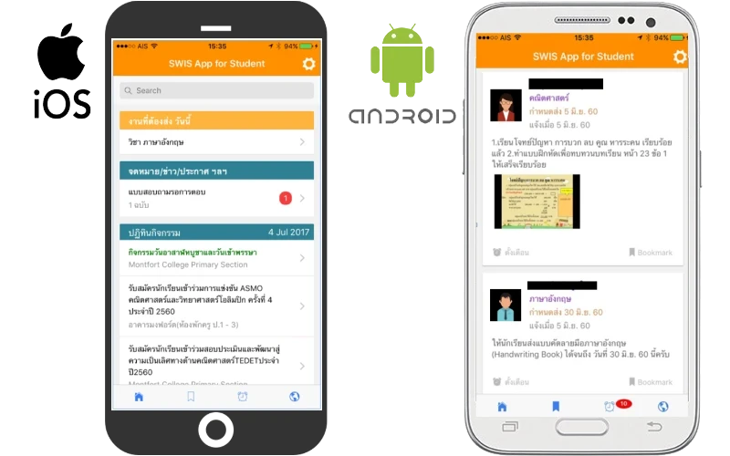
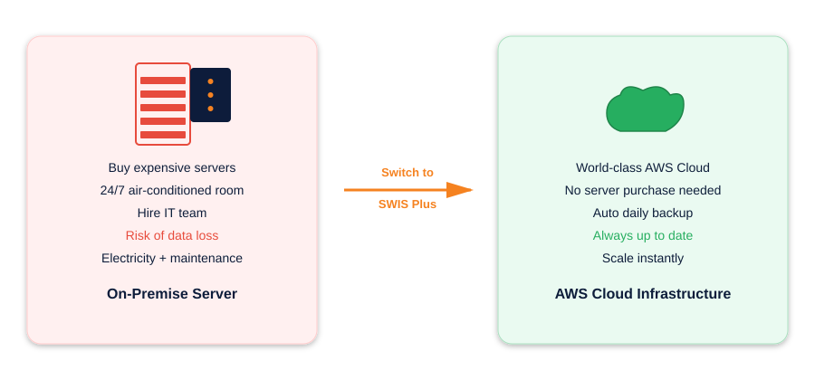
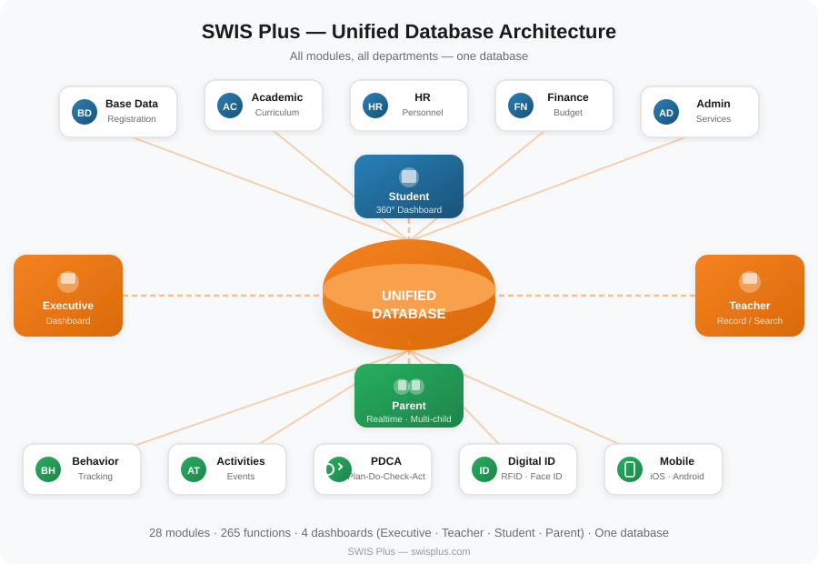
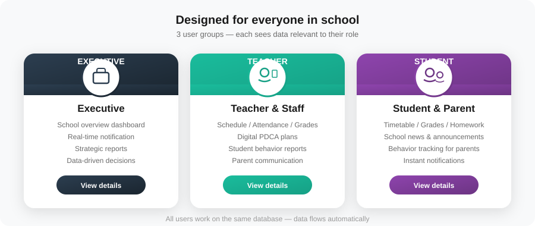
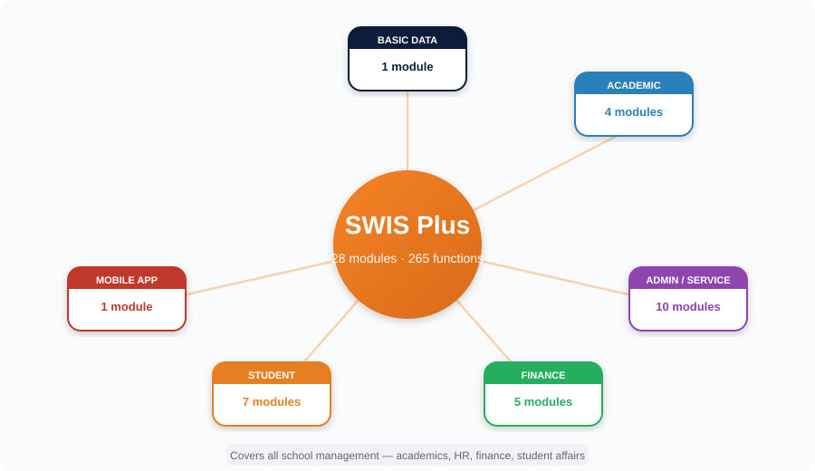
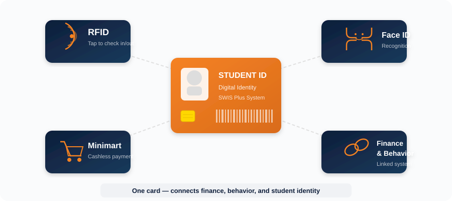

School Web-based Information System

SWIS Plus สร้างมาตรฐานความสำเร็จร่วมกับสถาบันการศึกษาชั้นนำกว่า 14 แห่ง และยังได้รับความไว้วางใจจากโรงเรียนภายนอกที่เลือกใช้บริการอย่างต่อเนื่องยาวนาน ด้วยประวัติการพัฒนาที่เคียงคู่กับโรงเรียนมากว่า 25 ปี เป็นเครื่องยืนยันว่านี่คือระบบที่สอดรับทั้งรากฐานที่มั่นคงและการเปลี่ยนแปลงในอนาคต
ในอดีต โรงเรียนต้องลงทุนซื้อเซิร์ฟเวอร์ราคาสูง สร้างห้องเซิร์ฟเวอร์ปิดแอร์ตลอด 24 ชั่วโมง จ้างทีม IT ดูแลระบบ อัปเดตซอฟต์แวร์ สำรองข้อมูล — ค่าใช้จ่ายที่มองไม่เห็นแต่สะสมมหาศาล ทั้งค่าไฟ ค่าบำรุงรักษา ค่าเปลี่ยนอุปกรณ์ที่เสื่อมสภาพ และความเสี่ยงที่ข้อมูลจะสูญหายเมื่อเครื่องเสีย
SWIS Plus ทำงานบน Amazon Web Services (AWS) ทั้งหมด — โรงเรียนไม่ต้องซื้อเซิร์ฟเวอร์ ไม่ต้องทำห้องเซิร์ฟเวอร์ ไม่ต้องจ้างทีมดูแลระบบ ข้อมูลถูกสำรองอัตโนมัติทุกวัน ระบบอัปเดตตลอดเวลา และขยายขนาดได้ทันทีเมื่อโรงเรียนเติบโต

ปัญหาที่โรงเรียนส่วนใหญ่เผชิญคือแต่ละฝ่ายต่างคนต่างซื้อซอฟต์แวร์ของตัวเอง — ฝ่ายวิชาการระบบหนึ่ง ฝ่ายการเงินอีกระบบ ฝ่ายบุคคลอีกระบบ ข้อมูลจึงกระจัดกระจายอยู่คนละฐาน ไม่สามารถเชื่อมโยงหรือวิเคราะห์ภาพรวมได้
SWIS Plus แก้ปัญหานี้ตั้งแต่ต้นทาง — ทุกโมดูล ทุกฝ่ายงาน ทำงานบนฐานข้อมูลเดียวกันทั้งหมด ข้อมูลนักเรียนคนเดียวกันถูกใช้ตั้งแต่งานทะเบียน วิชาการ การเงิน พฤติกรรม ไปจนถึง Dashboard ของผู้บริหาร ไม่มีข้อมูลซ้ำซ้อน ไม่มีช่องว่างระหว่างฝ่าย ทำให้การวิเคราะห์และตัดสินใจมีประสิทธิภาพในทุกจุดทุกระดับ

ข้อมูลรวมศูนย์ไม่ได้หมายความว่าใครก็เข้าถึงได้ทุกอย่าง — SWIS Plus ควบคุมสิทธิ์การเข้าถึงตามบทบาทอย่างเข้มงวด พร้อมปฏิบัติตาม พ.ร.บ.คุ้มครองข้อมูลส่วนบุคคล (PDPA) อย่างครบถ้วน

SWIS Plus ออกแบบให้ความเชี่ยวชาญเฉพาะด้านของบุคลากรทุกระดับ ทุกช่วงวัย ถูกแปลงเป็นข้อมูลเชิงกลยุทธ์ได้ทันที โดยไม่ต้องเปลี่ยนวิธีทำงานทั้งหมด — ทำให้ประสบการณ์ที่สั่งสมมาเป็นสิบปีกลายเป็นพลังขับเคลื่อนคุณภาพการศึกษาที่วัดผลได้จริง
ครอบคลุมงานบริหารโรงเรียนทุกด้าน ตั้งแต่งานวิชาการ งานบุคคล งานการเงิน ไปจนถึงงานกิจการนักเรียน

รองรับ RFID · Face ID · Minimart · เชื่อมระบบการเงินและพฤติกรรมนักเรียนในบัตรเดียว

ภายใต้ระบบเอกสารที่ซับซ้อนของหน่วยงานต้นสังกัด SWIS Plus ทำหน้าที่เป็นเครื่องมือมาตรฐานกลาง ที่ช่วยลดภาระงานสะสมผ่านระบบ Digital PDCA ที่ละเอียดและรัดกุม เมื่อภาระงานบริหารจัดการถูกทำให้ง่ายขึ้น ครูจึงมีเวลาคิด วางแผน และพัฒนาผู้เรียนได้อย่างเต็มที่
ผู้บริหารเรียกดูรายงานได้เองทันทีจากมือถือ — ข้อมูล Real-time จากฐานจริง ไม่ต้องสั่งการให้ทีมงานประมวลผลอีกต่อไป
ดูรายละเอียดสำหรับผู้บริหาร →เลือกเข้าดูรายละเอียดแต่ละโมดุลได้ทันที
ภาพรวมแอปพลิเคชันทั้งหมด พร้อม QR code ดาวน์โหลดจาก App Store และ Google Play
SWIS Application for Executive — Real Time Notification สำหรับผู้บริหารโรงเรียน
SWIS Application for Teacher — จัดการงานสอน แจ้งเตือน ตารางเรียน พฤติกรรมนักเรียน
SWIS Application for Student — ตารางเรียน คะแนน การบ้าน ข่าวสาร เชื่อมถึงผู้ปกครอง
ให้ความเชี่ยวชาญระดับมืออาชีพเป็นกุญแจสำคัญสู่การพัฒนาสถานศึกษาของคุณอย่างยั่งยืน